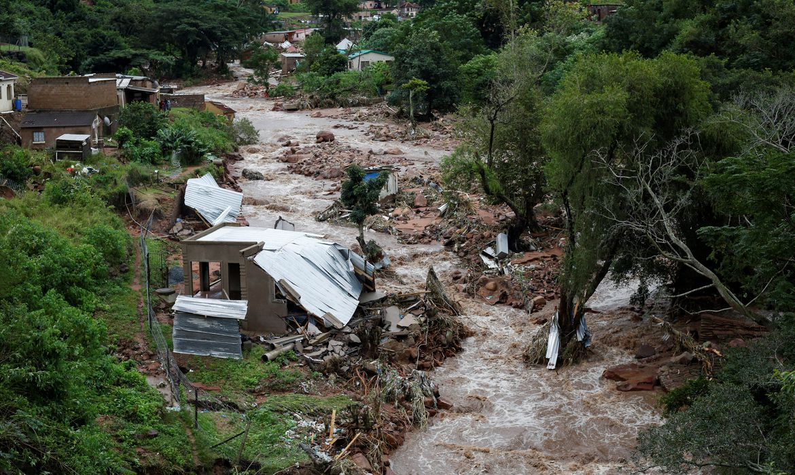
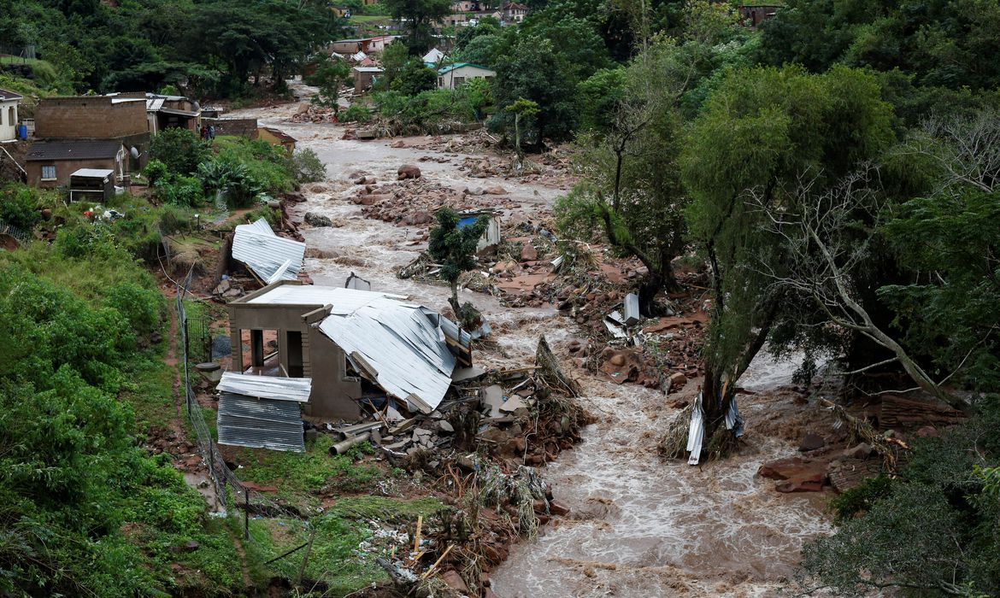

Algumas Informações
O Brasil é um país vulnerável às mudanças climáticas globais, pois apresenta grande extensão territorial, o que dificulta análises de impacto e a criação de políticas públicas de redução dos impactos ambientais e sociais.
A vulnerabilidade do país diante de impactos ambientais aumenta, além disso, devido à existência de doenças infecciosas, como a dengue, cólera, malária, febre amarela ou calazar (leishmaniose visceral), com surtos observados, por exemplo, em capitais do Nordeste (no início das décadas de 1980 e 1990, depois de maciça migração rural-urbana, impulsionada por secas prolongadas), e a urbanização concentrada (metropolização), que criou grandes aglomerados sujeitos a inundações, escorregamentos e aumento da poluição atmosférica (que pode provocar um aumento do número de óbitos).
Nordeste vulnerável.
A região Nordeste apresenta, em especial, grande vulnerabilidade, relacionada aos baixos indicadores sociais (saúde, educação, saneamento básico etc) e à existência de altos índices de doenças endêmicas, em um substrato geográfico caracterizado pela semi-aridez e secas frequentes no sertão.
O clima semiárido apresenta baixa umidade do ar e elevada temperatura, que causam grande evaporação da água. Como os solos são, geralmente, rasos e pedregosos, não conseguem armazenar a água das chuvas por muito tempo. O resultado é um grande número de rios temporários ou intermitentes.
Menos chuva
As chuvas do sertão estão relacionadas, em parte, à dinâmica dos deslocamentos das massas de ar da Amazônia. Como, segundo algumas simulações, as chuvas e a umidade da Amazônia vão diminuir (alguns autores relacionam esta possibilidade ao aumento da temperatura do Oceano Pacífico junto ao Equador, o que criaria um fenômeno El Niño permanente), em consequência os períodos de baixa pluviosidade ou déficit hídrico no Nordeste, que costumam durar de seis a sete meses, passariam a ocorrer durante os 12 meses do ano. Isso reduziria ainda mais as chuvas (cerca de 20% se a temperatura subir até 4ºC) e a umidade do ar e aumentaria a evaporação da água e a evapotranspiração da vegetação.
Os rios diminuiriam a sua vazão, inclusive aqueles que nascem em áreas mais úmidas, como o São Francisco, que nasce na Serra da Canastra, em Minas Gerais, e que, acredita-se, poderia perder cerca de 20% da sua vazão caso a temperatura aumente 4ºC. A redução da vazão provocará a diminuição da geração de energia, comprometendo o crescimento econômico da região e criando obstáculos para os projetos de irrigação e transposição do rio São Francisco.
O sertão passaria, segundo essa análise, por um processo de aridização, com a extinção de plantas e animais endêmicos (que não existem em nenhuma outra parte do mundo), e apresentaria o domínio das cactáceas e algumas variedades de bromélias.
Impactos ambientais
O INPE (Instituto Nacional de Pesquisas Espaciais) produziu o Relatório do Clima do Brasil, no qual apresenta cenários para o clima brasileiro e nordestino para o final do século 21. Os principais impactos seriam:
- A produção agrícola de subsistência de grandes áreas pode se tornar inviável, colocando a própria sobrevivência do homem em risco.
- O alto potencial para evaporação do Nordeste, combinado com o aumento de temperatura, causaria diminuição da água de lagos, açudes e reservatórios.
- O semiárido nordestino ficará vulnerável a chuvas torrenciais e concentradas em curto espaço de tempo, resultando em enchentes e graves impactos sócioambientais. Porém, e mais importante, espera-se uma maior freqüência de dias secos consecutivos e de ondas de calor decorrentes do aumento na freqüência de veranicos.
- Com a degradação do solo, aumentará a migração para as cidades costeiras, agravando ainda mais os problemas urbanos.
- O litoral também sentiria os efeitos do aquecimento global. A elevação do nível dos oceanos, o aumento da intensidade e da frequência das ressacas, a ocupação irregular da orla e mudanças provocadas pelo homem nos rios que deságuam no mar são apontados, por especialistas em climatologia e fenômenos marinhos, como as causas mais prováveis da redução das praias. Uma elevação de 50 cm no nível do Atlântico poderia consumir 100 metros de praia no Norte e no Nordeste. Em Recife, por exemplo, a linha costeira retrocedeu 80 metros de 1915 a 1950, e mais de 25 metros de 1985 a 1995.
- Existe a possibilidade de que o número de refugiados climáticos atinja, no Nordeste, um milhão de pessoas. Caso isso ocorra, haverá a necessidade de se elaborarem políticas sociais de emergência para tentar evitar o caos urbano e humano na Zona da Mata.
 
